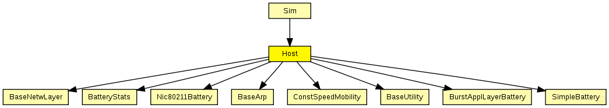

This documentation is released under the Creative Commons license
This documentation is released under the Creative Commons licenseThe following diagram shows usage relationships between types. Unresolved types are missing from the diagram. Click here to see the full picture.
The following diagram shows inheritance relationships for this type. Unresolved types are missing from the diagram. Click here to see the full picture.
If a module type shows up more than once, that means it has been defined in more than one NED file.
| Sim (compound module) | (no description) |
| Name | Value | Description |
|---|---|---|
| display | bgb=250,250,white,,;bgp=10,10 |
| Name | Direction | Size | Description |
|---|---|---|---|
| radioIn | input |
gate for sendDirect |
| Name | Type | Default value | Description |
|---|---|---|---|
| blackboard.coreDebug | bool |
debug switch for the base framework |
|
| mobility.coreDebug | bool |
debug switch for the core framework |
|
| mobility.x | double |
x coordinate of the nodes' position (-1 = random) |
|
| mobility.y | double |
y coordinate of the nodes' position (-1 = random) |
|
| mobility.z | double |
z coordinate of the nodes' position (-1 = random) |
|
| mobility.debug | bool |
debug switch |
|
| mobility.speed | double |
speed of the host (in m/s) |
|
| mobility.updateInterval | double |
time interval to update the hosts position (seconds) |
|
| battery.debug | bool | ||
| battery.nominal | double | ||
| battery.capacity | double | ||
| battery.voltage | double | ||
| battery.resolution | double | ||
| battery.publishDelta | double | ||
| battery.publishTime | double | ||
| batteryStats.debug | bool | ||
| batteryStats.detail | bool | ||
| batteryStats.timeSeries | bool | ||
| appl.debug | bool |
debug switch |
|
| appl.headerLength | int |
length of the application message header (in bits) |
|
| appl.burstSize | int |
size of the burst |
|
| arp.coreDebug | bool |
debug switch for the core framework |
|
| net.notAffectedByHostState | bool | false | |
| net.debug | bool |
debug switch |
|
| net.stats | bool |
stats switch |
|
| net.headerLength | double |
length of the network packet header (in bits) |
|
| nic.mac.notAffectedByHostState | bool | false | |
| nic.mac.coreDebug | bool |
debug switch |
|
| nic.mac.headerLength | double |
length of the MAC packet header (in bits) |
|
| nic.mac.queueLength | int | ||
| nic.mac.rtsCtsThreshold | int | ||
| nic.mac.bitrate | double | ||
| nic.mac.defaultChannel | int |
minimum channel support auto bit rate selection support: specify borders at which to change modulation. |
|
| nic.mac.autoBitrate | bool |
use auto bit rate adaptation |
|
| nic.mac.snr2Mbit | double |
threshold to use 2Mbit (in dB) |
|
| nic.mac.snr5Mbit | double |
threshold to use 5.5Mbit (in dB) |
|
| nic.mac.snr11Mbit | double |
threshold to use 11Mbit (in dB) |
|
| nic.mac.neighborhoodCacheSize | int |
keep information on neighborhood |
|
| nic.mac.neighborhoodCacheMaxAge | double |
consider information in cache outdate if older than (in seconds) |
|
| nic.mac.txPower | double |
the power to transmit packets with [mW] |
|
| nic.mac.centerFrequency | double |
the center frequency the Mac uses [Hz] |
|
| nic.phy.coreDebug | bool | ||
| nic.phy.headerLength | int | 0 |
defines the length of the phy header (/preamble) |
| nic.phy.usePropagationDelay | bool |
Should transmission delay be simulated? |
|
| nic.phy.thermalNoise | double |
the strength of the thermal noise [dBm] |
|
| nic.phy.useThermalNoise | bool |
should thermal noise be considered? |
|
| nic.phy.analogueModels | xml |
Specification of the analogue models to use and their parameters |
|
| nic.phy.decider | xml |
Specification of the decider to use and its parameters |
|
| nic.phy.sensitivity | double |
The sensitivity of the physical layer [dBm] |
|
| nic.phy.maxTXPower | double |
The maximum transimission power of the physical layer [mW] |
|
| nic.phy.timeRXToTX | double |
switchTimes [s]: |
|
| nic.phy.timeRXToSleep | double | ||
| nic.phy.timeTXToRX | double | ||
| nic.phy.timeTXToSleep | double | ||
| nic.phy.timeSleepToRX | double | ||
| nic.phy.timeSleepToTX | double | ||
| nic.phy.initialRadioState | int |
module Host { parameters: @display("bgb=250,250,white,,;bgp=10,10"); gates: input radioIn; // gate for sendDirect submodules: blackboard: BaseUtility { parameters: @display("p=200,75;b=30,25"); } mobility: ConstSpeedMobility { parameters: @display("p=200,150;b=30,25"); } battery: SimpleBattery { parameters: numDevices = 1; @display("p=60,200;b=30,25;rect"); } batteryStats: BatteryStats { parameters: @display("p=120,200;b=30,25;rect"); } appl: BurstApplLayerBattery { parameters: @display("p=90,50;b=100,20,rect"); } arp: BaseArp { parameters: @display("p=200,225;b=30,25,rect"); } net: BaseNetwLayer { parameters: @display("p=90,100;b=100,20,rect"); } nic: Nic80211Battery { parameters: @display("p=90,150;b=100,20,rect"); } connections: nic.uppergateOut --> net.lowerGateIn; nic.uppergateIn <-- net.lowerGateOut; nic.upperControlOut --> net.lowerControlIn; nic.upperControlIn <-- net.lowerControlOut; net.upperGateOut --> appl.lowerGateIn; net.upperGateIn <-- appl.lowerGateOut; net.upperControlOut --> appl.lowerControlIn; net.upperControlIn <-- appl.lowerControlOut; radioIn --> nic.radioIn; }
This documentation is released under the Creative Commons license